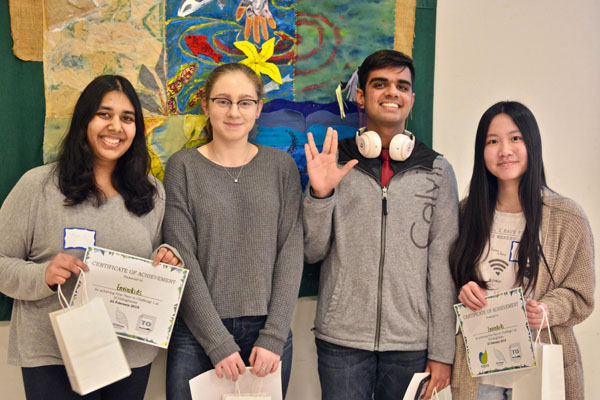
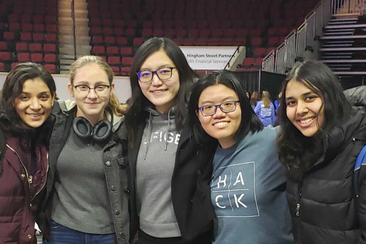

Hi! My name is Jaya Gupta. I'm a nanotechnology engineering student at the University of Waterloo. I'm interested in computer science and love learning to code. Below is some more about my education, interests & hobbies, and achievements.
Hi! My name is Jaya Gupta. I'm a nanotechnology engineering student at the University of Waterloo. I'm interested in computer science and love learning to code. Below is some more about my education, interests & hobbies, and achievements.
I'm studying nanotechnology engineering, the manipulation of matter at the atomistic level to create innovations in various fields, including pharmaceuticals, electronics, and new materials, among others. I chose this field because it's a multi-disciplinary field that combines multiple areas I'm interested in, including electrical engineering, chemical engineering, materials science, physics, and biology.
I'm very interested in learning how to code because I like problem solving. Currently, I can code in Python, HTML/CSS/JavaScript, and MATLAB. I have learnt these languages both through school and on my own through hackathons and online resources. I'm currently working on further developing my skills in web development and machine learning/AI. I would also love to learn back end programming in the future.
I like learning about UX/UI design and incorporating design principles into my projects to make them more usable and aesthetically pleasing. I'm proficient in design tools such as UXPin, Figma, and Adobe XD.
I enjoy attending hackathons because it gives me the opportunity to try solving real-world problems with tech. It's also a great way to develop my skills while meeting other students. My first hackathon was ECOding Hacks hosted by TOHacks at York University, where my team (pictured below) created a web-app called EnviroKids containing a suite of games to educate kids about the environment. EnviroKids won the top prize in its category.
Next, I attended WiC Hacks 2019 at the Rochester Institute of Technology. My team created MeeLia, a mental health voice assistant with sentiment analysis aimed at helping women with mental health issues. MeeLia won the MLH Best Hardware Award. Most recently, I attended TechTogether 2019 in Boston. There, my team (pictured below) competed in the IBM challenge with an AI program called SmartHire in order to help eliminate AI bias in the hiring process. Our project won the IBM Research Award and the Liberty Mutual Best Hack for Gender Equality Award.
I help organize the University of Waterloo BioTEC Conference, an annual student-run biotechnology and bioengineering conference that strives to promote some of the most cutting edge developments at the intersection of biology and engineering. You can find more info about BioTEC here.
I'm an avid swimmer and was on my high school's competitive swim team. I've also done lifeguard training through the National Lifesaving Society.